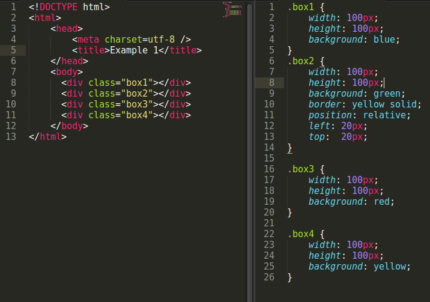
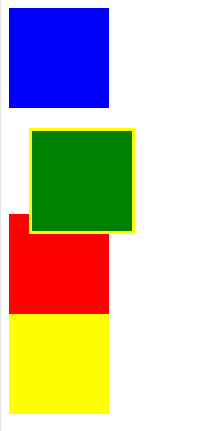
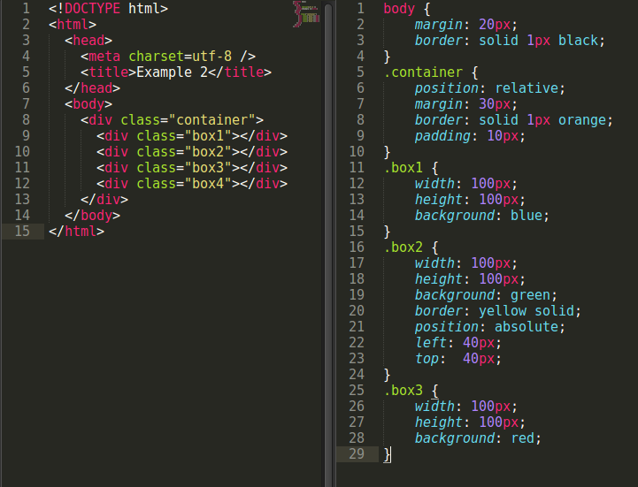
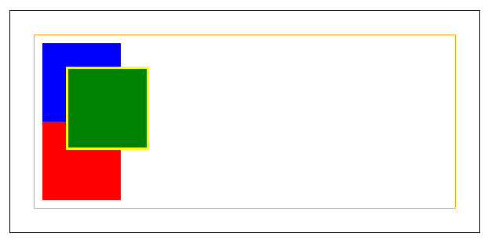
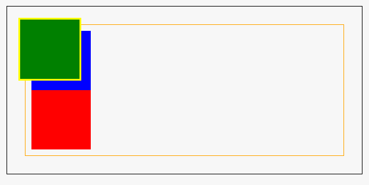
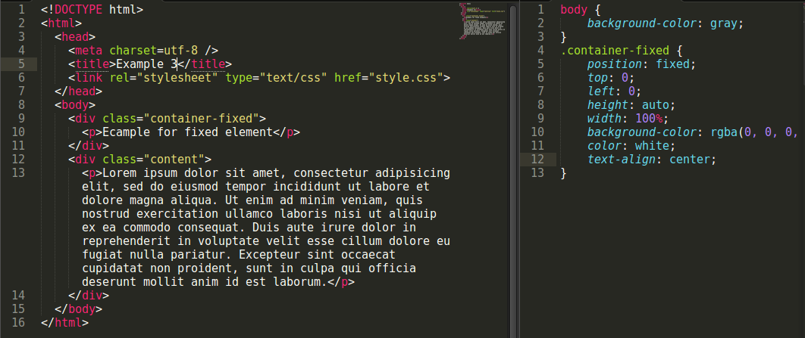
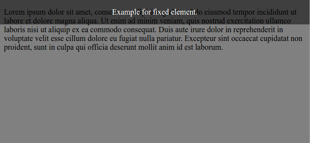
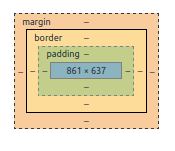

Когато изграждаме интерфейса на един софтуерен продукт, от изключителна важност е всеки елемент да заема точно определно място. Понякога това е задача, която изисква познания как би се държал дадения елемент в различни ситуации. Спрямо конкретната му функция, можем да изпълним тази задача по различни начини. Сега ще се запознаете с някои от основните методи.
Свойството position и различните му стойности
По подразбиране, елементите в един html документ се разполагат в реда на тяхното деклариране. Поради различните нужди и желани крайни резултати, това последователно подреждане може да бъде манипулирано. Сега ще разгледаме четирите най-използвани стойности на css свойството position:
static - Статично позициониране на елемент
Първата стойност, която ще разгледаме е тази, която е “default”-ната за всеки елемент. Ето и пример, за това как се декларира тя:
.example-selector {
position: static;
}
В повечето случаи, употребата на стойността static е напълно излишна, защото тя се задава по подразбиране, ако няма друга декларирана стойност. По този начин, елементите в htmlдокумента ще се подредят в последователен ред, в зависимост от това дали те са блокови (пр. div) или вградени/inline (пр. span).
relative - Релативно позициониране на елемент
Другата стойност, която е изключително честа и удобна в прилагането на различни техники, е relative.
.example-selector {
position: relative;
}
Сигурно се питате каква е разликата между тези две стойности? Ако имаме два елемента, единия дефиниран с { position: static; }, а другия с { position: relative; }, то те биха се държали напълно еднакво. Разликата обаче е, че когато има релативно разположен обект, то на него могат да му се декларират други четири CSS свойства - top, right, bottom, left. По този начин можем да манимулираме първоначално зададената му позиция. За целта нека разгледаме примерния код [1] по-долу и след това да го анализираме.

фигура 1: Дефиниране на четири блокови елемента и стилове към тях [1]

фигура 2: Резултат от изпълнението на кода от фигура 1. [2]
Първо, тези кутии ще се покажат в реда, в който сме ги декларирали, като всяко ще бъде на нов ред, заради блоковия елемент div. Но както се вижда на изображението от крайния резултат, втората кутия е изместена от очакваното място. Това се дължи на дефинираните й две свойства { top: 20px; left: 20px; }. По този начин, тази кутия е изместена отгоре и отляво с по 20px от първоначалното си място. Тук е важно да припомним, че координатната система, която се използва и спрямо която се разполагат и изчисляват позициите на елементите, е с център горе вляво (както още се нарича, Картезийска координатна система в 4-ти квадрант или още Декартова). Подобен ефект ще се получи, ако използваме и други две свойства margin-top, margin-left, но тяхната употреба ще повлияе на останалите елементи. Когато задаваме позицията на някой елемент със стойности на top, right, bottom и left, не влияем по никакъв начин на разположението на околните елементи.
absolute - Абсолютно позициониране на елементИдва ред и на третата възможна стойност и примера за нейната декларация:
.example-selector {
position: absolute;
}
При позициониране на някой елемент със стойност absolute, то той е напълно отделен от нормалния поток на елементите и подобно на релативното разполагане на обекти, може да му се прилагат вертикални и хоризонтални отклонения с помощта на вече познатите top, right, bottom и left. Но разбира се, съществува някаква разлика между тези стойности. Както казахме, абсолютно позиционираният елемент е напълно отделен от нормалния поток на елементите. Това означава, че околните елементи ще се държат така, сякаш той дори не е там. Когато прилагаме методи да отместим обект, с деклариран { position: relative; }, ние приемаме за изходна точка мястото, където е неговото първоначално подреждане в потока на елементи. Ето тук идва и съществената разлика на тези две стойности (relative, absolute), защото при отместване на обект с абсолютна стойност, неговото отместване ще бъде спрямо прозореца на браузъра (т.е. html тага). Но това може да се промени като декларираме { position: relative; } на елемента-контейнер, спрямо който искаме да отместим елемента. По този начин се създава нов контекст на позициониране. За да стане по-ясно това, нека разгледаме следния код и прилежащия резултат от него [2]:

фигура 3: Дефиниране на четири блокови елемента, разположени в общ блоков контейнер и стилове към тях [3]

фигура 4: Резултат от изпълнението на кода от фигура 3. [4]
В този пример, оранжевия контейнер, в който са разположени четирите кутии, е дефиниран с { position: relative; } като по този начин създава новото контекстово пространство. Със сега зададените стойности за отместване на зелената кутия { top: 40px; left: 40px; }, тя се отмества спрямо този контейнер. Ако на този контейнер не му беше зададена релативна стойност или изобщо го нямаше, то зелената кутия щеше да се отмести със същите стойности, но спрямо прозореца на браузъра и би изглеждало така:

фигура 5: Резултат от изпълнението на кода от фигура 3, но без промяна на контекството пространство. [5]
Важно е отново да се отбележи, че с този начин на отместване на елементите, не сме засегнали никой от останалите в документа.
fixed - Фиксирано позициониране на елемент
Ето и последната стойнот на свойството relative.
.example-selector {
position: fixed;
}
Спрямо спецификацията си, фиксирано разположените елементи попадат така да се каже в категорията на абсолютно позициониране. Тези два типа са много подобни, но с две ключови разлики:
при фиксираните елементи контекстовото пространство е винаги началото на документаи и не се влияе от предшествани релативно дефинирани контейнери, както при абсолютно зададени елементи.
точно заради това фиксирано място, когато се scroll-ва страницата, този елемент няма да се мести заедно с останалото съдържание на документа.
Нека разгледаме следния примерен код и резултат, за да се онагледи дефиницията:

фигура 6: Деклариране на документ с фиксиран елемент в него и стилове

фигура 7: Резултат от изпълнението на кода от фигура 6.
В горната част на страницата се показва полупрозрачна лента с текст в нея и тя ще остане там дори и при scroll-ване на страницата. Това е постигнато като на този контейнер е деклариран с { position: fixed; }. Друг пример за фиксирано позициониране е този документ и страничното навигационно меню към него. То е декларирано с { position: fixed; } и по този начин независимо от скролването на страницата, винаги се намира на едно и също удобно за употреба място.
sticky - Фиксирано позициониране на елемент
Ето и една сравнително нова стойност - sticky.
Sticky позиционирането на елементите е подобно на релативното разположение, но отместването се изчислява спрямо най-близкия предшественик с възможност за скрол, а ако такъв не е дефиниран, тогава се пресмята спрямо самия прозорец на браузъра [6]. С други думи, залепващото позициониране е смесица от релативно и фиксирано позициониране. Елементът се третира като релативно позициониран, докато не премине определен праг, в който момент той се третира като фиксиран. [11] Ето и един онагледяващ пример за тази стойност: [12]
Възможностите да позиционираме един елемент в html пространството са доста и не толкова лесни за реализация. Вече споменахме основните стойности за CSS свойството position, но това далеч не са единствените начини. Съществуват още две стойности, които могат да се използват, но за тях все още няма добра поддръжка от браузърите. Това са стойностите center и page. За тях само ще споменеми, но ако желаете да се запознаете с тях по-подробно, повече информация има на следните линкове [7], [8]
Друг начин да подредим елементите е с помощта на други основни CSS свойства - margin, padding. Употребата на тези две свойства понякога е доста объркваща. В общи линии, елементите в CSS са представени като правоъгълна кутия, чийто размер се определя от елементите content, padding, border и margin.

фигура 8: Диаграма на отделните слоеве на един елемент
Както се вижда от диаграмата на фигура 8, padding е слой, който се простира от границата на елемента до неговото съдържание и се използва, за да се контролира това разстояние. Стойността, която му се приложи ще влияе само на този елемент. Ако желаем да постигнем някво разграничаване между отделните елементи, то за тази цел трябва да изпозлваме свойството margin. [9] Но това понеже е тема на друг реферат, няма да влизам в големи подробности за тънкостите при изпозлването на тези свойства.
Друг метод, който в последно време започва да се изпозлва масово е { display: flex; }[10], но и за него може да се прожете в реферата на колегата/колежката. :)